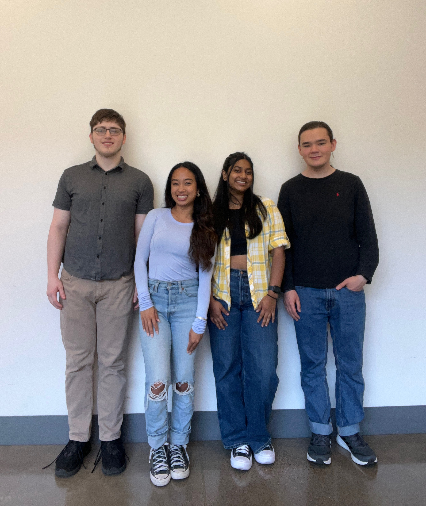

Project Identity
Project Name: GARY (Generative AI Reviewer for You)
Team Members: Steve Akiyama, Maile Look, Varsha Narayan, Grant O’Connor
Timeline: 2024-2025 Capstone Project (In Progress)
Value Proposition
Problem: Traditional assignments often lack adaptability, leading to disengagement and limited understanding.
Target Audience: University students and instructors in large general education courses.
Core Features: Personalized feedback, AI-generated follow-up questions, automated evaluation, and academic source integration via RAG.
Why It’s Better: Provides dynamic, real-time feedback tailored to individual learning needs.
Technical Implementation
- Frontend: React, HTML/CSS
- Backend: Python, FastAPI, LangChain
- Model: OpenAI GPT-4
- Database: Qdrant (Vector Store)
- Hosting: AWS EC2
- Collaboration: GitHub, JIRA
- Features: Retrieval-Augmented Generation (RAG)
Access & Usage
Repo: GitHub Repository
Instructions: Clone the repo, install dependencies, run the FastAPI backend and React frontend. See README for setup.
Documentation: Included in repo with user guide and API reference.
GARY in Action
Live Demo: Launch App
Meet the Team
📞 Contact Us
Grant O’Connor
BS/MS Computer Science (game simulation/game dev) – Graduating 2027
oconnorg@oregonstate.edu LinkedInVarsha Narayan
BS Computer Science (Systems) – Graduating June 2026
narayava@oregonstate.edu LinkedInAcknowledgments
Special thanks to our mentor Joe Slade for his guidance and vision, and the OSU EECS Department for supporting our journey.